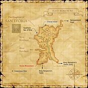

Description
East Ronfaure is an outdoor area in Ronfaure.
Map

Involved in Quests / Missions
| Quest / Mission | Type | Starter | Location |
|---|---|---|---|
| An Explorer's Footsteps | Map | Abelard | Selbina (G-9) |
| The Vicasque's Sermon | General | Abioleget | Northern San d'Oria (M-6) |
| To Cure a Cough | General | Nenne | Southern San d'Oria (F-6) |
| Waters of the Cheval | General | Miageau | Northern San d'Oria (L-7) |
NPCs
| Name | Location | Type |
|---|---|---|
| Andelain | pos=J-11 | — |
| Croteillard | pos=G-6 | Gate Guard |
| Rayochindot | pos=G-6 | Gate Guard |
Notorious Monsters
| Name | Level | Drops | Steal | Family | Spawns | Notes |
|---|---|---|---|---|---|---|
| Bigmouth Billy | 09-10 | Red Rock Blue Rock Yellow Rock Green Rock Translucent Rock Purple Rock Black Rock White Rock Copper Ore Flint Stone Iron Ore Mythril Ore Silver Ore Zinc Ore | Gold Ore |  WormsImage source WormsImage source | — | L, H |
| Swamfisk | 11-15 | Gelong Staff Shall Shell Pugil Scales | — |  PugilsImage source PugilsImage source | — | A, L |
Regular Monsters


Story walkthroughs in this area
| Story | Mission / quest |
|---|---|
| WotG 41-1 | Her Memories: Homecoming Queen |
| WotG 28 | Another World |
| WotG 41 | Her Memories |
References
External references describe their own server or retail rules. Documented Zenith changes take precedence.
Map credits: Map 1 — HorizonXI Wiki. Original game maps © SQUARE ENIX; redrawn maps retain the credited authorship and license.

Additional level-75 reference
|
This lush evergreen forest, set aside by the d'Oraguille family for hunting festivals, lies to the east of the Kingdom of San d'Oria. Blessed by the abundant waters of the Cheval River, the wildlife in these woodlands has flourished for centuries. However, extensive logging by Orcish troops--and an astounding increase in the number of wild sheep--have resulted in a significant reduction in the area's wildlife. San d'Orian officials are currently pondering over a solution to this new dilemma.  Connecting Areas |


Involved in Quests/Missions
| Quest | Type | Starter | Location |
|---|---|---|---|
| An Explorer's Footsteps | Map | Abelard | Selbina G-9 |
| The Vicasque's Sermon | General | Abioleget | Northern San d'Oria M-6 |
| To Cure a Cough | General | Nenne | Southern San d'Oria F-6 |
| Waters of the Cheval | General | Miageau | Northern San d'Oria L-7 |
| Mission | Country | Starter | Location |
| Mission 1-1: Smash the Orcish Scouts | San d'Oria | Gate Guard | San d'Oria |
Chocobo Digging
Fishing
|
NPCs Found Here
Weather
Logging
| ||||||||||||||||||||||||||||||||||||||||||||||||||||||||||||||||||||||||||||||||||||||||||||||||
Notorious Monsters Found Here
| Name | Level | Drops | Steal | Family | Spawns | Notes | |||||||
|---|---|---|---|---|---|---|---|---|---|---|---|---|---|
|
9-10 |
1 |
L, H | |||||||||||
|
9-10 |
2 |
A, L | |||||||||||
|
HP = Detects Low HP; M = Detects Magic; Sc = Follows by Scent; T(S) = True-sight; T(H) = True-hearing JA = Detects job abilities; WS = Detects weaponskills; Z(D) = Asleep in Daytime; Z(N) = Asleep at Nighttime | |||||||||||||
Mobs Found Here
| Name | Level | Drops | Steal | Family | Spawns | Notes | |||||||
|---|---|---|---|---|---|---|---|---|---|---|---|---|---|
|
8-10 |
3 |
A, S, M | ||||||||||
|
1-5 |
30 |
H | |||||||||||
|
Unknown |
1 |
A, H | ||||||||||
|
1-5 |
40 |
H | ||||||||||
|
4-8 |
14 |
A, H, HP | ||||||||||
|
Unknown |
1 |
A, H | ||||||||||
|
3-6 |
19 |
L, H | |||||||||||
|
1-5 |
86 |
S, Sc | |||||||||||
|
5-8 |
1 |
A, L, S | |||||||||||
|
3-8 |
4 |
A, L, S | |||||||||||
|
3-8 |
21 |
A, L, S | |||||||||||
|
4-8 |
14 |
A, L, S | |||||||||||
|
3-6 |
21 |
L, H | ||||||||||
|
Unknown |
1 |
A, H | ||||||||||
|
3-8 |
21 |
A, L, S, Sc | |||||||||||
|
3-8 |
18 |
A, L | |||||||||||
|
3-8 |
16 |
A, L, S, Sc | |||||||||||
|
Unknown |
1 |
A, H | ||||||||||
|
1-5 |
24 |
H | |||||||||||
|
3-6 |
25 |
L, S, Sc | |||||||||||
|
5-8 |
10 |
A, H, HP | ||||||||||
|
-1 |
14 |
H | |||||||||||
|
-1 |
25 |
S, Sc | |||||||||||
|
5-8 |
45 |
L, S | |||||||||||
|
HP = Detects Low HP; M = Detects Magic; Sc = Follows by Scent; T(S) = True-sight; T(H) = True-hearing JA = Detects job abilities; WS = Detects weaponskills; Z(D) = Asleep in Daytime; Z(N) = Asleep at Nighttime | |||||||||||||
Adapted from Eden Wiki: East Ronfaure · Contributors and history · CC BY-SA 4.0. Revision 45405. Layout, links and optional background text adapted for Zenith.